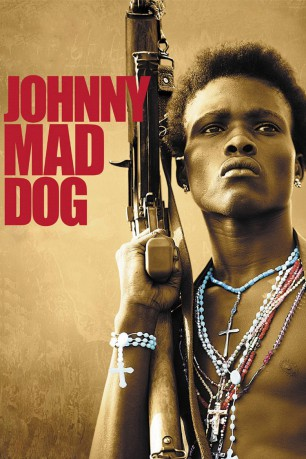

#3330 Johnny Mad Dog
 
 IMDB-Wertung: 6.8 / 10
IMDB-Wertung: 6.8 / 10  Metascore: 45
Metascore: 45 
Ein Jugendlicher läuft, bewaffnet mit einer schweren AK-47, durch die Hitze Libanons. Der 15-jährige Johnny ist ein Kindersoldat, der mit seiner Truppe raubend und mordend durch das Land zieht. Die 16-jährige Lakole, die verzweifelt versucht, ihren kranken Vater und ihren kleinen Bruder zu retten, eines eines seiner Opfer. Scheinbar grundlos, durch Machtgier, Hunger und Leid, ist ein Krieg entstanden, den nun Kinder und Jugendliche austragen, und bei dem eigentlich keiner mehr weiß, warum immer wieder das Feuer eröffnet wird und Hunderte von Menschen täglich sterben müssen.
Jahr: 2008
Dauer: 94 Minuten
FSK:
Land: Frankreich Studio: Koch MediaTonspuren:
Untertitel: Deutsch,
Auflösung: 1080p (1920x816) Größe: 4874 MB
Genre: Drama, Krieg
Regisseur: Jean-Stéphane Sauvaire
Drehbuch: Emmanuel Dongala, Jean-Stéphane Sauvaire
Soundtrack: Jackson Tennesse Fourgeaud
Darsteller:
- Christophe Minie als Johnny Mad Dog
- Daisy Victoria Vandy als Laokole
- Joseph Duo als Never Die
- Dagbeth Tweh als No Good Advice
- Careen Moore als Fatmata - Lovelita
- Mohammed Sesay als Butterfly
- Barry Chernoh als Small Devil
- Léo Boyeneh Kote als Pussy Cat
- Maxwell Carter als Monsieur Kamara
- Miata Fahnbulleh als Madame Kamara
- Terry Johnson als Joseph
- Onismus Kamoh als Fofo
- Lawrence King als Ibrahim
- Massiata E. Kenneh als Tanya Toyo
- Anthony King als Pere Ibrahim
- Fanta K. Smith als Mère Ibrahim
- Teddy Boy als Gamin aux oranges
- Philip Tokpa als Homme au cochon
- Joe Jackson als L'homme au vélo
- Prince Kotie als Young Major
- Nathaniel J. Kapeyou als Nasty Plastic
- Eric Cole als Jungle Rocket
- Prince Doblah als Cpt Dust to Dust
- Augustin Tokpa als Tupac
- Papa Jackson als Cpt Disrespect
- Emmanuel Tozzi als Take It Free
- Jimmy Jacobs als Black Cat
- Sam Loco als Rebel BB
- Mohammed Kamara als Disgrunto
- Robert Davies als Fuck Dogo
- James Ragibo als Scarface
- Alexander Zorga als Iron Jacket
- Julius Wood als Quick To Kill
- Mellow King als Vieil homme
- Nancy Towsend als Femme village
- Madison Pelele als Sorcier incantations
- Clifford Robinson Jr. als Homme TV
- Catherine Queeneh als Fille danse
- Jacoby Williams als Vieil homme en blanc
- Jonathan Perry als Sniper
- Veronica Kollie als Mayama
- Magdalena Wolulah als Femme Pickup
- Gromah Flomo als Fille Pickup
- George Malbah als Homme Pickup
- Fuat Gebara als Casque bleu
- Shamway Wilson als Casque bleu
- Carlos Badawi als Casque bleu
- Christina Tohr als Femme accouchement
- Delano Jacobs als Rebelle
- Eric Padmore als Rebelle
Datei: X:\2008(G-M)\Johnny Mad Dog (2008, FSK, 1920x816).mkv seit 14.03.2016
Festplatte: HD 2008(G-Z)-2009(A-F)
 Es gibt insgesamt 73 Filme in der Gruppe '2008(G-M)'
Es gibt insgesamt 73 Filme in der Gruppe '2008(G-M)'